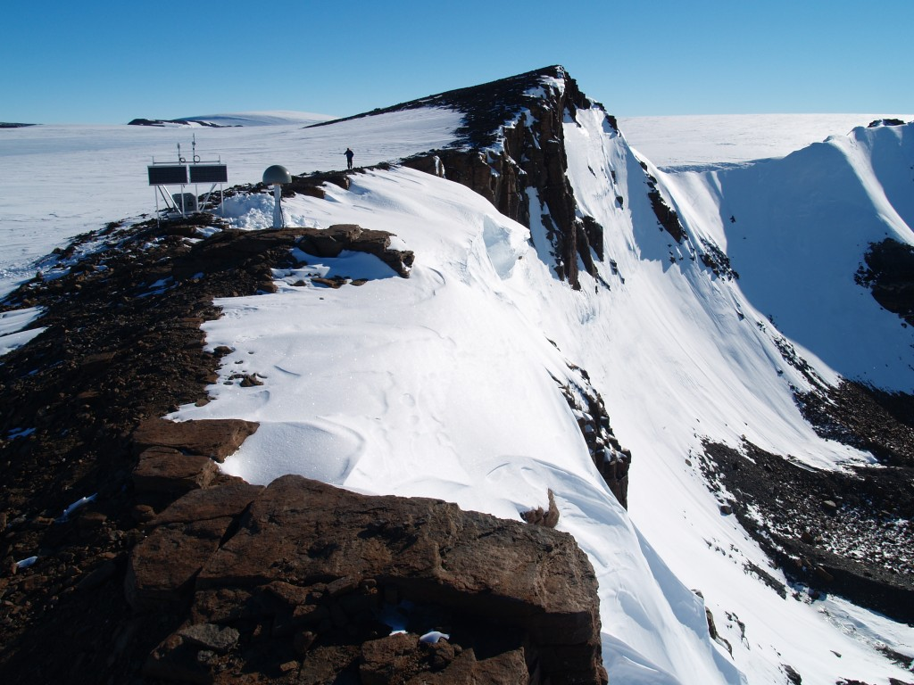

Back to all sites
Pecora Escarpment
| Station ID | PECE |
|---|---|
| Coordinates | S 85.6119, W 68.5564 |
| Installed | 2007-2008 season |
| Former Projects | WAGN |
| Former Names | W02A |
| Transportation | Twin Otter |
| Nearest Hub | 674km to ALE Union Glacier Camp |

Coordinate: S 85.6119, W 68.5564
Closest operations HUB: 674km to ALE Union Glacier Camp
An irregular escarpment, 7 mi long, standing 35 mi SW of Patuxent Range and marking the southernmost exposed rocks of the Pensacola Mountains. Mapped by USGS from surveys and USN air photos, 1956-66. Named by Dwight Schmidt, geologist to the Pensacola Mountains, 1962-66, for William T. Pecora, eighth director of the U.S. Geological Survey, 1965-71 (https://data.aad.gov.au/aadc/gaz/scar/display_name.cfm?gaz_id=129956).